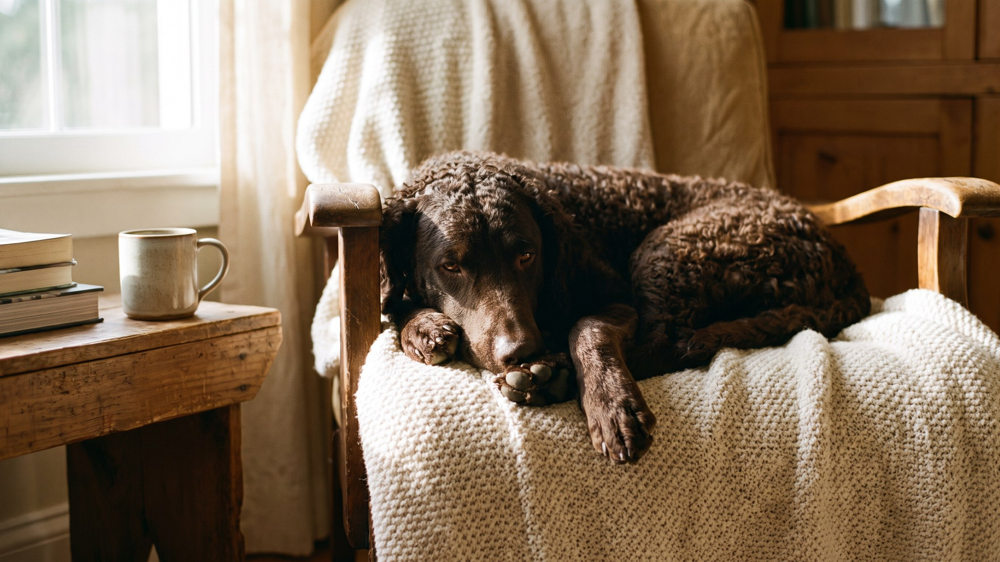

На первой выставке в Лондоне в 1860 году курчавошёрстный ретривер уже был взрослой породой с устойчивым поголовьем. Лабрадор тогда ещё только вёз папки с бумагами по Ньюфаундленду. Эта собака охотилась в холодной воде и густом кустарнике задолго до того, как ретриверы стали популярными семейными псами. Сейчас её почти не видно на улицах, и это многое говорит о том, что она собой представляет.
🐾 Ваш питомец — курчавошёрстный ретривер?
Заведите профиль в AnimaLife: приложение запомнит породу, возраст и вес и будет подсказывать по уходу именно для неё. Вопросы AI-ветеринару — круглосуточно и бесплатно.
Завести профиль → Завести в MAX →
У вас iPhone? AnimaLife есть в App Store
Плотные тугие завитки по всему корпусу. Это водоотталкивающая броня, а не декоративная черта: курчавошёрстный ретривер заходил в ледяные болота и густой камыш, и шерсть защищала его от воды, мороза и шипов. Подшёрстка нет, завитки плотно прилегают к коже.
Главное правило ухода: не расчёсывать щёткой. Щётка разрушает структуру завитка, шерсть становится пушистой и теряет водостойкость. Вместо этого:
Это первое, что стоит понять. Лабрадор и голден-ретривер открытые, дружелюбные, рады любому незнакомцу. Курчавошёрстный ретривер держится сдержаннее. С семьёй он преданный и спокойный, с чужими людьми осторожен, иногда смотрит с недоверием. Это не агрессия, а характер рабочей охотничьей собаки, которая привыкла работать с конкретным хозяином.
Независимость у него тоже выше средней для ретриверов. Он думает самостоятельно, и дрессировка требует последовательности: скучные однообразные упражнения он отрабатывает вяло. Лучше работает, когда задача меняется и есть смысл.
Курчавошёрстному ретриверу нужно не менее двух часов активности в день. Прогулка по парку не считается. Ему нужна задача: апортировка, плавание, нюховые игры, занятия в поле. Зимой это означает длинные пробежки, занятия в манеже или работу с искусственной дичью.
Без нагрузки порода разрушается изнутри: появляется тревожность, собака грызёт вещи и теряет управляемость. Это рабочая собака, которая живёт в городе только при условии, что работа есть.
Порода в целом крепкая. Из того, за чем стоит следить: состояние суставов тазобедренного сустава и наследственные изменения сетчатки глаз. Перед покупкой щенка просите у заводчика документы о проверке родителей по этим показателям. Плановые осмотры раз в год помогут поймать изменения до того, как они станут проблемой.
Курчавошёрстный ретривер подходит активным людям с опытом собак: тем, кто охотится, занимается спортом с собакой или живёт за городом с большим участком. Он хорошо уживается с детьми в семье, но не становится другом для всего двора. Начинающим владельцам или тем, кто хочет спокойного домашнего ретривера, лучше смотреть на лабрадора или голдена.
🐾 У вас курчавошёрстный ретривер?
AnimaLife соберёт уход под породу: к каким болезням есть склонность, что проверять по возрасту, чем кормить и когда пора к врачу. Бесплатно, прямо в мессенджере.
Собрать план ухода → Собрать в MAX →
У вас iPhone? AnimaLife есть в App Store
🐾 Понравился разбор?
Подпишитесь на канал — каждый день разбираем по одному тревожному симптому у кошек и собак: что в пределах нормы, а когда пора к врачу. Подпишитесь, чтобы не пропустить разбор, который может спасти здоровье вашего питомца.
Материал носит информационный характер и не заменяет очную консультацию ветеринара.